Author: vadim@fwbuilder.org
http://www.fwbuilder.org
| Revision 1.0 Author: vadim@fwbuilder.org http://www.fwbuilder.org |
Firewall Builder was introduced on this site earlier with articles Getting Started With Firewall Builder and Using Built-In Revision Control In Firewall Builder. There, we looked at the basic functions of fwbuilder and created simple firewall configuration, as well as explored more advanced features of the program such as its built-in revision control system. This article continues the series and demonstrates how Firewall Builder can help you automate the process of deployment and activation of the generated firewall configuration.
After firewall configuration has been generated by one of the policy compilers and saved in a file on disk in the format required by the target firewall, it needs to be transferred to the firewall machine and activated. This function is performed by the component we call "Policy Installer" which is part of the Firewall Builder GUI.
Starting with version 2.0, Firewall Builder comes with built-in installer that uses SSH to communicate with the firewall. Installer works on all OS where Firewall Builder is available: Linux, FreeBSD, Windows and Mac OS X. On Linux, *BSD and Mac OS X it uses standard ssh client that comes with the system; on Windows it uses putty.
Installer needs to be able to copy generated firewall script to the firewall and then run it there. In order to do so, it uses secure shell. The program does not include ssh code, it uses external ssh client. On Linux, BSD and Mac OS X it uses standard ssh client ssh and secure shell file copy program scp that come with the system; on Windows it uses plink.exe and pscp.exe. Full directory path to ssh client program can be configured in the Preferences dialog (accessible via Edit/Preferences menu), however if you are on Linux, *BSD or Mac and use standard ssh client that is available via your PATH environment variable, you do not need to change default value there.
Installer works differently depending on the targert platform. In case of Linux and BSD based firewalls it uses scp to copy generated configuration files to the firewall machine and then uses ssh to log in and run the script. In case of Cisco routers or ASA appliance (PIX), it logs in, switched to enable and then configuration mode and executes configuration commands one by one in a manner similar to expect scripts. It inspects router's replies looking for errors and stops if it detects one. In the end, it issues command write mem to store new configuration in memory and logs out.
Built-in policy installer has been designed to work with dedicated firewall machine, that is, when computer where you run Firewall Builder GUI and actual firewall are different machines. Nevertheless, it can be used when they are the same machine as well. The only difference is that in all commands below you would use the name or address of the machine where you run Firewall Builder instead of the name or address of the dedicated firewall. SSH client will then connect back to the same machine where it runs and everything will work exactly the same as if it was different computer.
Installer does not use the name of the firewall to connect to, it always connects to its IP address. It starts by scanning interfaces of the firewall object looking for one that is marked as "Management interface" using checkbox in the interface object dialog. Installer will use address of this interface to connect to. The "management interface" checkbox looks like shown on the next screenshot:
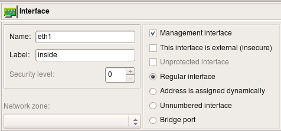If your firewall has multiple addresses and you want to use the one that is not assigned to its interface in the fwbuilder object, then you can overwrite the address using entry field in the "installer" tab of the "advanced" firewall object settings dialog, like this:
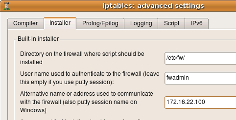More about other input fields in this dialog below.
Finally you can overwrite the address on one-time basis just for the install session using entry field in the installer options dialog. This is the same dialog where you enter password:
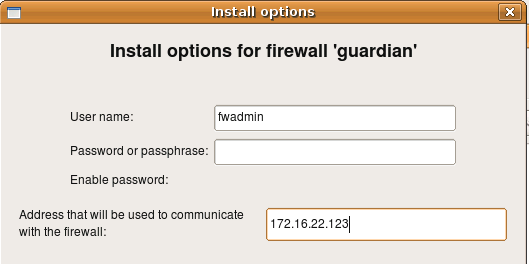This works for all supported firewall platforms, i.e. iptables on Linux, pf on OpenBSD and FreeBSD, ipfw on FreeBSD and Mac OS X, ipfilter on FreeBSD, Cisco IOS access lists and Cisco ASA (PIX). Regardless of the platform, installer follows the rules described here to determine what address it should use to connect to the firewall.
You can skip this section if you run Firewall Builder GUI on Linux, *BSD or Mac OS X.
Here is the link to slide show that demonstrates the process.
Download and install putty.exe, plink.exe and pscp.exe somewhere on your machine (say, in C:\putty). Download URL is http://www.chiark.greenend.org.uk/~sgtatham/putty/
Installer does not use putty.exe but it will be very useful for troubleshooting and for setting up sessions and ssh keys.
In the Edit/Preferences dialog, in the "SSH" tab, use "Browse" buttons to locate plink.exe. Hit "OK" to save preferences. If you installed it in C:\putty, then you should end up with C:\putty\plink.exe in this entry field. Do the same to configure path to pscp.exe.
You may log in to the firewall using regular user account or as root. See instructions below for an explanation how to configure sudo if you use regular user accounts. This part of the configuration does not depend on the OS you run Firewall Builder.
Before you try to use fwbuilder installer with plink.exe and pscp.exe, test it from the command line to make sure you can log in to your firewall. If this is the first time you try to log in to the firewall machine using putty.exe, plink.exe or pscp.exe, then it will discover new host key and ask you if it is correct and if you want to save it in cache. There are lots of resources on the Internet that explain what does this mean and how you should verify key accuracy before you accept it. If the key is already known to the program it will not ask you about it and will just proceed to the part where it asks you to enter password. Enter the password and hit "Return" to see if you can log in and see command line prompt from the firewall.
Here is the command (assuming you use account "fwadmin" to manage firewall "guardian"):
C:\Users\vadim>c:\PuTTY\plink.exe -l fwadmin guardian
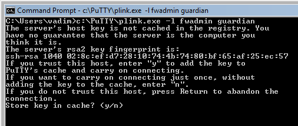
NOTE: Built-in installer does not use GUI ssh client putty.exe, it uses command line utilities that come from the same author plink.exe and pscp.exe. You can test with putty.exe but do not enter path to it in the SSH tab of the Preferences dialog in fwbuilder, it won't work.
Before v3.0.4 built-in installer could only use regular account to activate policy if this account was configured on the firewall to use sudo without password. Starting with v3.0.4 this is not necessary anymore because installer can recognize sudo password prompts and enter password when needed.
useradd fwadmin
mkdir /etc/fw
chgrp fwadmin /etc/fw
chmod g+w fwadmin /etc/fw
Configure sudo to permit user fwadmin execute firewall script and a couple of other commands used by fwbuilder policy installer. Run visudo on the firewall to edit file /etc/sudoers as follows:
Defaults:%fwbadmin !lecture , passwd_timeout=1 , timestamp_timeout=1
# User alias specification
%fwbadmin ALL = PASSWD: /etc/fw/<FWNAME>.fw , /usr/bin/pkill , /sbin/shutdown
ssh fwadmin@firewall sudo -S /etc/fw/<FWNAME>.fw
Installer needs to be able to run pkill shutdown to kill shutdown command that may be running if you tried to install policy in testing mode before. In testing mode installer copies firewall script to temporary directory /tmp then runs command shutdown -r timeout to schedule reboot in a few minutes and finally runs firewall script. To cancel scheduled reboot you need to install policy again, with test mode checkbox turned off. In this case installer will copy firewall script to its permanent place and use pkill to kill running shutdown command to cancel reboot.
$ ssh -l fwadmin <FWNAME>
You may use either password or public key authentication; the installer will work either way. Use putty.exe or plink.exe to test ssh access if you are on Windows (see above for the explanation how to do this on Windows).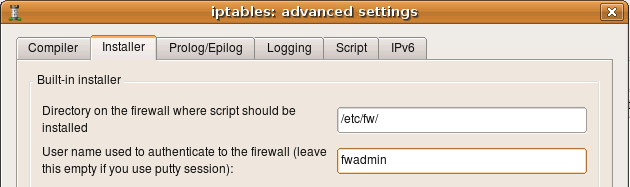
$ ssh -l root <firewall_name>
You may use either password or public key authentication; the installer will work either way.First of all, the .fwb file is portable and can be copied back and forth between Linux/BSD and windows machines. Even comments and object names entered in local language should be preserved since the GUI uses UTF-8 internally.
Built-in installer relies on path settings for ssh and scp in Edit/Preferences/SSH. Since preferences are stored outside of the .fwb file, the installer should work just fine when .fwb file is copied from Unix to Windows and back. Just configure path to ssh program in preferences on each system using default settings "ssh" on Linux and path to plink.exe on windows and give it a try.
One of the typical errors that even experienced administrators make sometimes is block ssh access to the firewall from the management workstation. You need your workstation to be able to communicate with the firewall in order to be able to make changes to the policy, so you always need to add a rule to permit this. Firewall Builder can simplify this and generate this rule automatically if you put an IP address of your workstation in the entry field on the first page of firewall settings dialog. Here is the screenshot that illustrates this setting for an iptables firewall; management station has an IP address 192.168.1.100
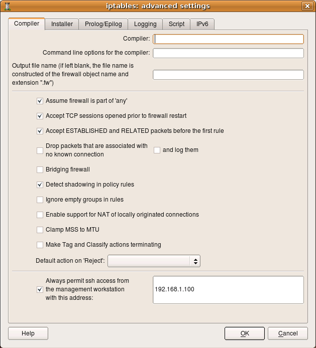
putty allows one to store destination host name or address, user name and bunch of other parameters in a session so that they all can be called up at once. If you wish to use sessions, do the following:
If ssh daemon on your firewall is listening on an alternative port, then you need to configure built-installer so that it will run scp and ssh clients with command line parameters that would make them connect to this port. This is done in the "installer" tab of the firewall object "advanced" settings dialog as shown on the following screenshot (here we set the port to "2222"):
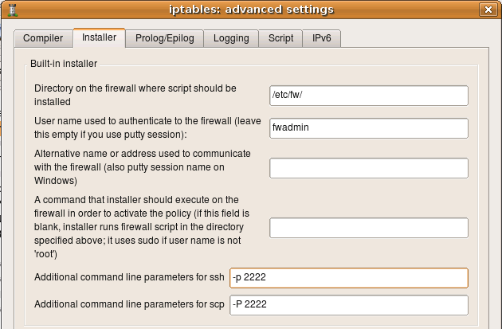
On Unix command line option that specifies port number is different for ssh and scp. It is lowercase -p for ssh and uppercase -P for scp. If you use putty tools plink.exe and pscp.exe on Windows, the option to specify alternative port number is -P (capital "P") for both.
You can use the same input fields in this dialog to add any other command line parameters for ssh and scp, for example this is where you can confiugre parameters to make it use alternative identity file (private keys). This information is saved with a firewall object rather than globally because you may need to use different parameters for different firewall machines, such as different key files or ports.
You can use the same entry fields in this dialog to provide other additional command line parameters for ssh and scp, for example to use keys from a different identity file. Here is how it looks like:
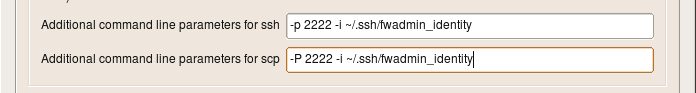
Here I configure ssh and scp to use alternative port and alternative identity file ~/.ssh/fwadmin_identity. The command line parameter for the port is different for ssh and scp, but parameter for the identity file is the same -i for both utilities.
On Windows, the simplest way (or may be the only way) to use alternative keys is to use putty sessions.
Built-in policy installer will not work if ssh access to the firewall is not working. Test it using this command on Linux if use you user "fwadmin" to manage firewall:
ssh -l fwadmin firewall
If you use root account to manage the firewall, the command becomes
ssh -l root firewall
On Windows use putty.exe or plink.exe to do this:
C:\Users\vadim>c:\PuTTY\plink.exe -l fwadmin firewall
C:\Users\vadim>c:\PuTTY\plink.exe -l root firewall
If you can not log in using ssh at this point, verify that ssh daemon is working on the firewall, that existing firewall policy does not block ssh access and ssh daemon configuration in /etc/ssh/sshd_config permits login for root (if you plan to use root account to manage the policy).
Now that all preparations are complete, we can move on and actually try to install newly generated firewall policy. Select firewall object in the object tree in Firewall Builder GUI, click right mouse button and use menu item "Install". The program will recompile the policy and open installer dialog.
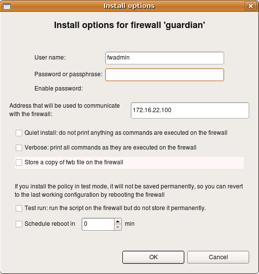
(This how installer options dialog looks like for iptables, pf, ipfilter and ipfw firewalls).
Here the program already entered user name fwadmin in the "User Name" field, but you can change it for one installation session if you wish. Next you need to enter the password for this user. This is the password of user fwadmin on the firewall machine. Address that will be used to comunicate with the firewall is also entered by the program automatically, it is taken from the firewall settings. You can change it for one installation session as well.
Other installer parameters do the following:
After all parameters are set and the password entered, hit "OK" to start installation.
If this is the first time your management machine is logging in to the firewall via ssh, it will find out that ssh host key of the firewall is unknown to it and will present you with a dialog:
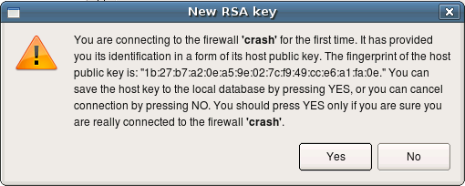
Here is says that it does not know host key of the firewall "crash". This is nothing more than a copy of the warning message presented by the ssh client. You should verify the host key manually and if it matches, click "Yes". If you click "No" in the dialog, installation process will be interrupted.
Installer only recognizes ssh client warning message about unknown public host keys. If you rebuld your firewall machine, which means its host key changes, ssh will print different warning message which fwbuilder installer does not recognise. In this case you will see this message in the installer progress window, but installation process will get stuck. You need to use ssh client (ssh on Unix or putty.exe on Windows) to update host key before you can use fwbuilder policy installer with this firewall again.
After this, installer copies files to the firewall and runs policy script there. You can monitor its progress in the dialog as shown on the screenshot:
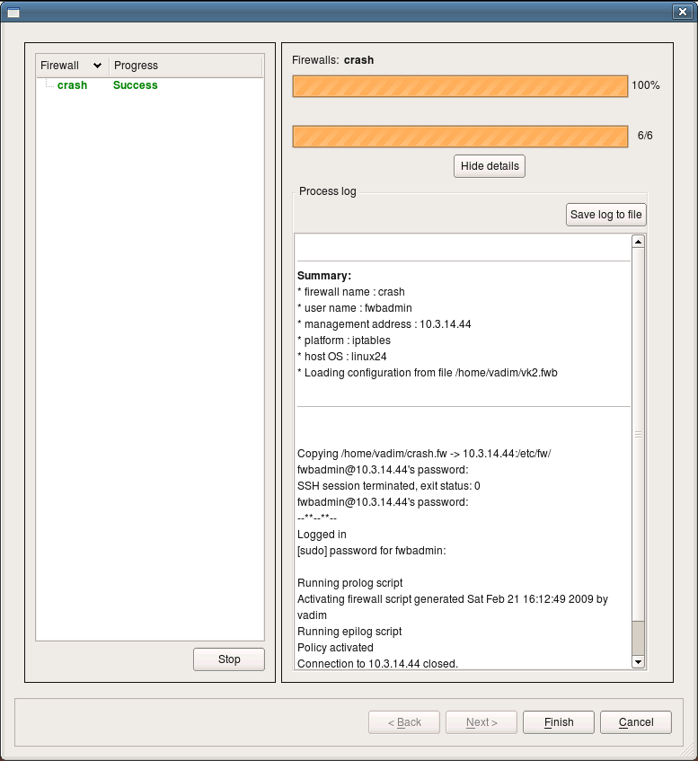
This is an example of successfull installation session. Installer records the status in the left hand side panel of the dialog. If you use installer to update several firewall machines in one session, their names and corresponding status of the installation session for each will be shown in the panel on the left. You can save installer log to a file using "Sabe log to file" button, this can be useful for documentation or troubleshooting.
From the user's point of view the installer works the same when you manage Cisco router or ASA firewall, with only few minor differences. First of all, the first screen of the installer, where you enter the password, offers another input field for the enable password as well.
You should be able to use IPv6 address to communicate with the router.
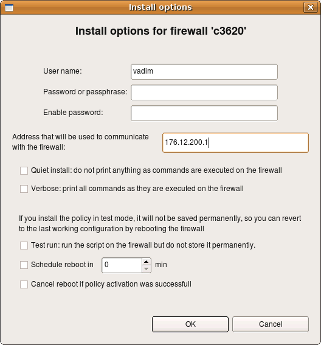
Most of the options and parameters in this dialog are the same as those for Linux firewalls (see above). The following parameters work differently for Cisco devices:
Here is a screenshot of installation session to a Cisco router. Note the output at the very top of the log that shows how installer detected previously unknown RSA host key and accepted it after the user clicked "Yes" in the pop-up dialog (not shown on the screenshot). It then logged into the router; you can see the banner motd output from the router. After this, installer switched to enable mode, set terminal width and turned off terminal pagination using terminal length 0 command and finally switched to the configuration mode. It then started enterig generated configuration line by line.
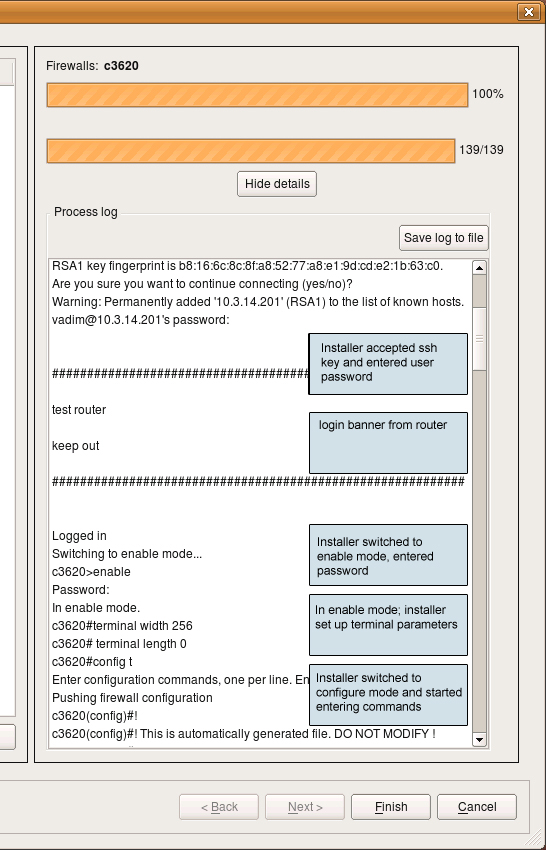
The final part of the installation session looks like this:
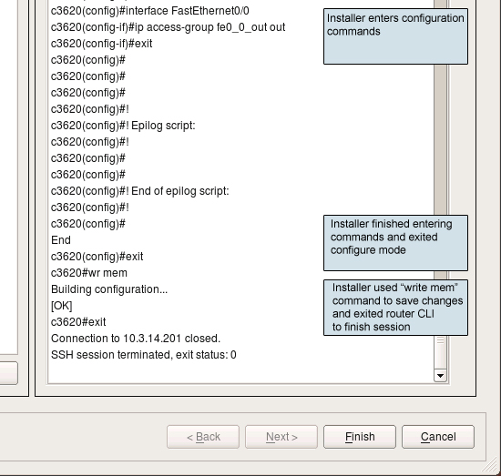
This was a successfull installation session, with no errors. Installer finished entering configuration lines and issued exit command to exit configuration mode, then wr mem command to save configuration to memory and finally exit again to log out.